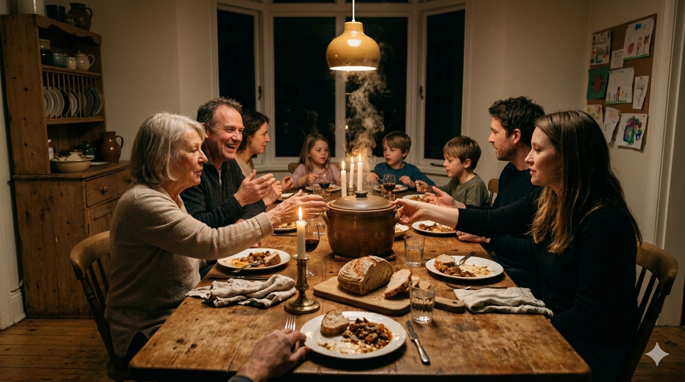
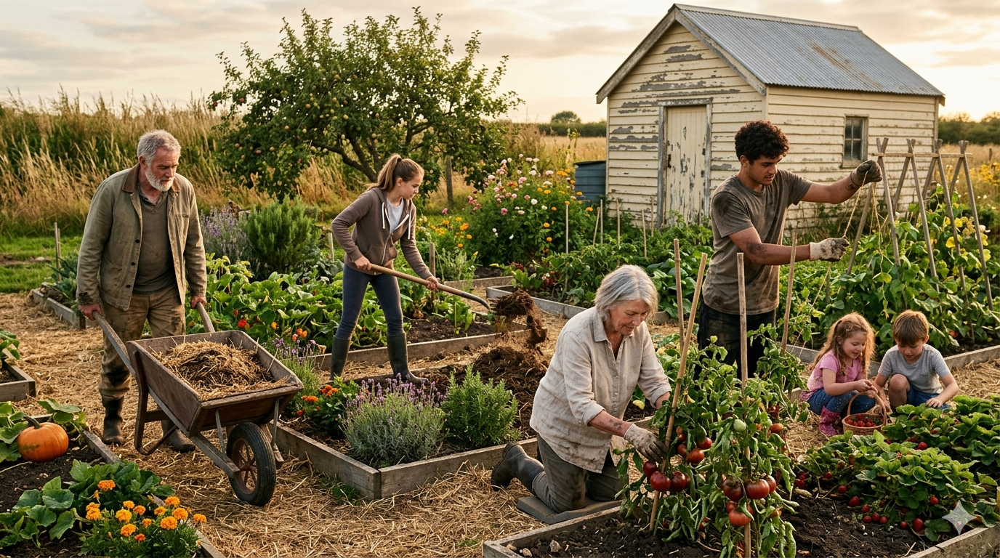
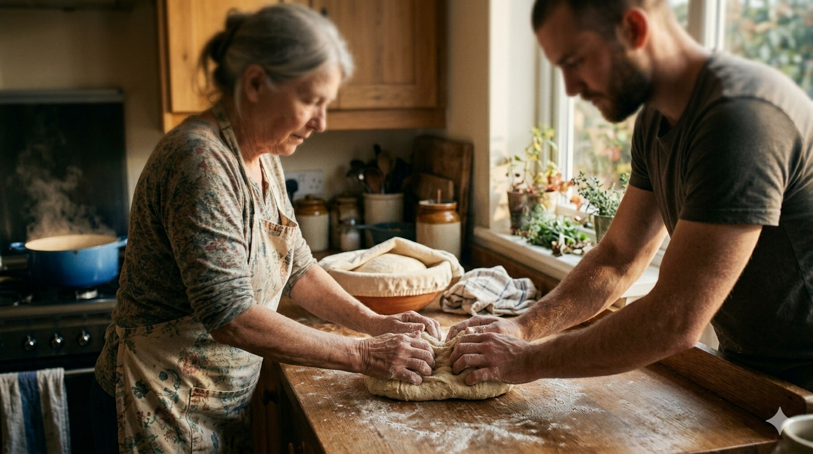
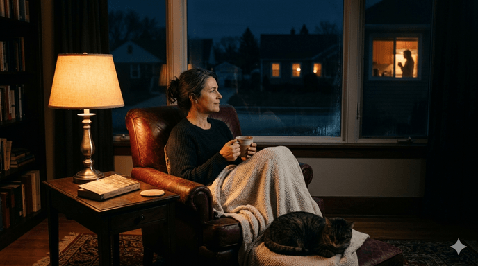

Environment, not tool. Ten shapes that route the organism back toward what it was built for.
The Adaptor series is the prescriptive half of the Artifacts suite. Not an app. Not a service. A library of shapes — concrete, repeatable arrangements of people, place, and rhythm — that deliver the inputs the modern environment stripped out.
Each shape targets a cluster of mechanisms and routes the organism toward the resolution condition it was built for. The software is scaffolding. The shape is the thing.

"8 people. Tuesday nights. Forever."
A standing weekly meal. Same 8–12 people. One house. One table. Someone cooks. Everyone eats. You talk. You clean up. You go home. That's the entire shape.
Food is the most universal survival need; the shared meal is the oldest human technology. What emerges without being designed: purpose (people are hungry, you cook), natural roles (the one who always brings dessert, the one who listens), leveled status, metabolized conflict, real bonding through repetition. The AI does exactly two things — make the first match, remove coordination friction — then it gets out of the way. Forever.

"Grow food with your people. Eat it together."
Six to ten people share a real piece of land. A community plot, someone's backyard, an allotment, a rooftop, a vacant lot with permission. They grow actual food. They tend it together. They harvest it. They eat it.
The garden touches the most mismatch domains at once: movement, nature contact, diet, circadian, touch, microbial exposure, temperature, social, purpose, closed loops. Living things depend on your hands. The 70-year-old who knows how to grow food becomes the most valuable person in the crew. The garden feeds the table; the table celebrates the garden.
"Bring people. Bring wood. That's all."
A literal fire. Outside. At night. With your people. Regularly. The fire circle is the single most referenced structure in the framework — two to four hours, every night, for 300,000 years. The whole band gathered. Stories, songs, gossip, conflict resolution, laughter, silence, processing.
Flicker triggers a parasympathetic response — heart rate drops, vigilance decreases. Firelight is the lighting we evolved reading faces in. The surrounding darkness creates a bounded space; the world shrinks to the circle. The app does infrastructure: finds fire-legal spaces, coordinates who brings wood, schedules the night. When the crew gathers at the fire, the app goes silent. It knows this is the moment it should not exist.

"What would you do with your hands?"
One question. Not your skills, not your CV, not what you do for work. Your instinct. The thing you'd naturally reach for if a band needed a hand. Cook. Grow. Fix. Carry. Walk with someone. Sit with someone. Teach. The system matches your answer to a real situation nearby that needs exactly that, and to the crew already doing it.
This is not volunteering. Volunteering is charity — one-directional, a different crew each time, no accumulation. The Crew Finder is joining: the crew needs you and you need the crew. First visit, you show up and do the thing. First season, the rhythm adjusts around your presence. First year, your specific hands in this specific place become irreplaceable — not from skill, from accumulated purpose.

"Someone's always awake. You're never alone at 3am."
The cruelest hour is 3am — when you can't sleep, when anxiety peaks, when the open loops scream loudest. In the EEA, 3am wasn't solitary; someone was always stirring in the camp — a baby, an elder, a fire tender. The Night Watch is an ambient connection layer for the hours between midnight and dawn. Not a crisis line, not a chat room. Just presence.
If you're awake, you can signal it — a gentle pulse to your band, no obligation. If two people are awake, you can open a quiet channel: ambient audio, someone else's kettle and breathing, the opposite of silence. No conversation required. A specific friendship forms between the regular 3am people — raw, honest, known differently than their daylight selves.
Four more shapes in development. The series is open — any arrangement of people, place, and rhythm that passes the frame (environment, not tool) qualifies.